This vignette goes through an example of creating a nif object for a single ascending dose study with the drug “examplinib”. The sdtm data for this study are provided as part of the package.
This vignette makes use of the following packages:
SDTM DATA
Looking at the summary of the sdtm, there is one treatment, ‘EXAMPLINIB’, and two analytes, “RS2023”, the parent compound, and “RS2023487A”, its metabolite:
sdtm <- examplinib_sad
summary(sdtm)
#> -------- SDTM data set summary --------
#> Study 2023000001 with 48 subjects providing PC data.
#>
#> Subjects per domain:
#> DOMAIN N
#> dm 71
#> vs 71
#> ex 48
#> pc 48
#> lb 71
#>
#> Arms (DM):
#> ACTARM ACTARMCD
#> Treatment cohort 1, 5 mg examplinib C1
#> Screen Failure SCRNFAIL
#> Treatment cohort 2, 10 mg examplinib C2
#> Treatment cohort 3, 20 mg examplinib C3
#> Treatment cohort 4, 50 mg examplinib C4
#> Treatment cohort 5, 100 mg examplinib C5
#> Treatment cohort 6, 200 mg examplinib C6
#> Treatment cohort 7, 500 mg examplinib C7
#> Treatment cohort 8, 800 mg examplinib C8
#> Treatment cohort 9, 1000 mg examplinib C9
#> Treatment cohort 10, 500 mg examplinib C10
#>
#> Treatments (EX):
#> EXTRT
#> EXAMPLINIB
#>
#> Specimens (PC):
#> none
#>
#> Analytes (PC):
#> PCTEST PCTESTCD
#> RS2023 RS2023
#> RS2023487A RS2023487A
#>
#> Treatment-to-analyte mappings:
#> EXTRT PCTESTCD ANALYTE
#> EXAMPLINIB RS2023 RS2023
#>
#> Parent-to-metabolite mappings:
#> none
#>
#> Time mappings:
#> noneCREATING A NIF DATASET
The generation of a NIF object starts with an empty nif object
(new_nif()), and we sequentially add the administrations,
observations, and baseline columns.
the
nif <- new_nif() %>%
add_administration(sdtm, "EXAMPLINIB", analyte = "RS2023") %>%
add_observation(sdtm ,"pc", "RS2023", cmt = 2) %>%
add_observation(sdtm, "pc", "RS2023487A", parent = "RS2023", cmt = 3) %>%
add_baseline(sdtm, "lb", "CREAT") %>%
add_bl_crcl() %>%
add_bl_renal()
nif %>% head()
#> REF ID STUDYID USUBJID AGE SEX RACE HEIGHT WEIGHT BMI
#> 1 1 1 2023000001 20230000011010001 54 0 WHITE 178.1 74 23.32942
#> 2 2 1 2023000001 20230000011010001 54 0 WHITE 178.1 74 23.32942
#> 3 3 1 2023000001 20230000011010001 54 0 WHITE 178.1 74 23.32942
#> 4 4 1 2023000001 20230000011010001 54 0 WHITE 178.1 74 23.32942
#> 5 5 1 2023000001 20230000011010001 54 0 WHITE 178.1 74 23.32942
#> 6 6 1 2023000001 20230000011010001 54 0 WHITE 178.1 74 23.32942
#> DTC TIME NTIME TAFD TAD PCELTM EVID AMT ANALYTE CMT PARENT
#> 1 2000-12-30 10:20:00 0.0 0.0 0.0 0.0 <NA> 1 5 RS2023 1 RS2023
#> 2 2000-12-30 10:20:00 0.0 0.0 0.0 0.0 PT0H 0 0 RS2023 2 RS2023
#> 3 2000-12-30 10:20:00 0.0 0.0 0.0 0.0 PT0H 0 0 RS2023487A 3 RS2023
#> 4 2000-12-30 10:50:00 0.5 0.5 0.5 0.5 PT0.5H 0 0 RS2023 2 RS2023
#> 5 2000-12-30 10:50:00 0.5 0.5 0.5 0.5 PT0.5H 0 0 RS2023487A 3 RS2023
#> 6 2000-12-30 11:20:00 1.0 1.0 1.0 1.0 PT1H 0 0 RS2023 2 RS2023
#> TRTDY METABOLITE DOSE DV MDV ACTARMCD IMPUTATION
#> 1 1 FALSE 5 NA 1 C1 admin time imputed from PCRFTDTC
#> 2 1 FALSE 5 0.0000 0 C1
#> 3 1 FALSE 5 0.0000 0 C1
#> 4 1 FALSE 5 1.7829 0 C1
#> 5 1 FALSE 5 0.4582 0 C1
#> 6 1 FALSE 5 7.1328 0 C1
#> BL_CREAT BL_CRCL BL_RENAL
#> 1 62.27509 106.6484 normal
#> 2 62.27509 106.6484 normal
#> 3 62.27509 106.6484 normal
#> 4 62.27509 106.6484 normal
#> 5 62.27509 106.6484 normal
#> 6 62.27509 106.6484 normalDATA EXPLORATION
To get an overview of the NIF object, we can summarize it, and plot the summary for a graphical representation of the baseline characteristics of the population and the analytes:
summary(nif)
#> ----- NONMEM input file (NIF) object summary -----
#> Data from 48 subjects across one study:
#> STUDYID N
#> 2023000001 48
#>
#> Males: 48, females: 0 (0%)
#>
#> Renal impairment class:
#> CLASS N
#> mild 4
#> normal 44
#>
#> Administered drugs:
#> RS2023
#>
#> Analytes:
#> RS2023, RS2023487A
#>
#> Subjects per dose levels:
#> RS2023 N
#> 5 3
#> 10 3
#> 20 3
#> 50 3
#> 100 6
#> 200 3
#> 500 18
#> 800 6
#> 1000 3
#>
#> 1632 observations:
#> CMT ANALYTE N
#> 2 RS2023 816
#> 3 RS2023487A 816
#>
#> Subjects with dose reductions
#> RS2023
#> 0
#>
#> Treatment duration overview:
#> PARENT min max mean median
#> RS2023 1 1 1 1
invisible(capture.output(
plot(summary(nif))
)) 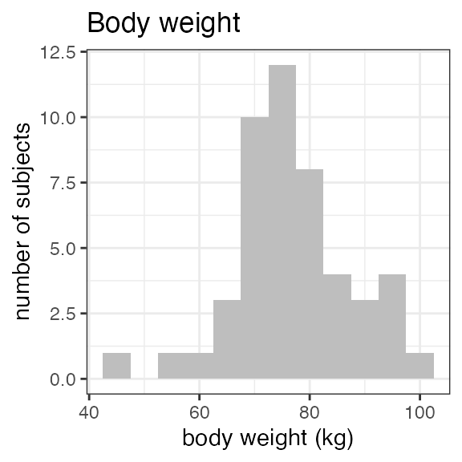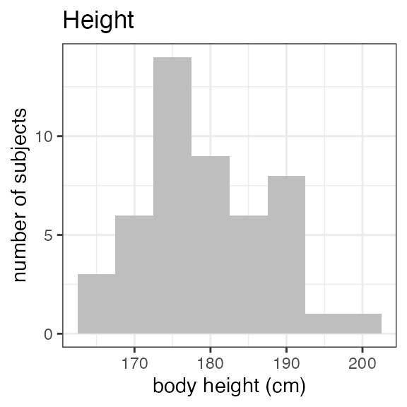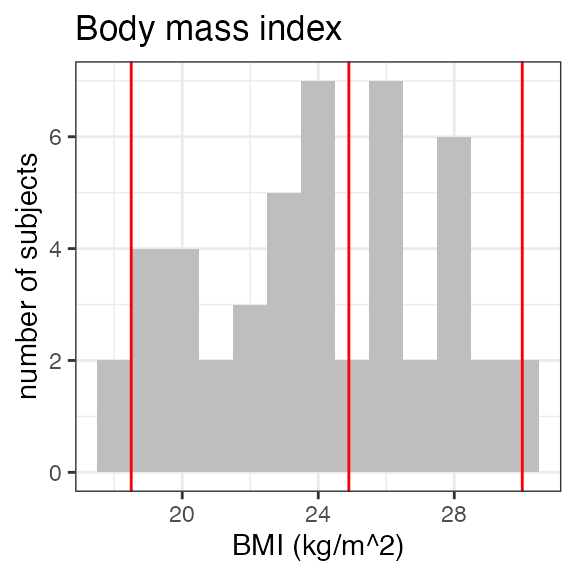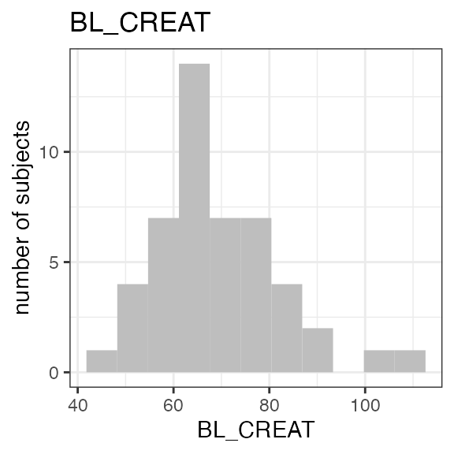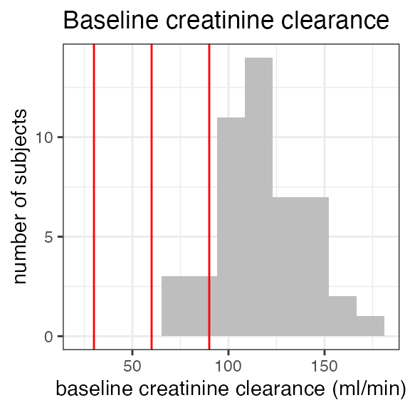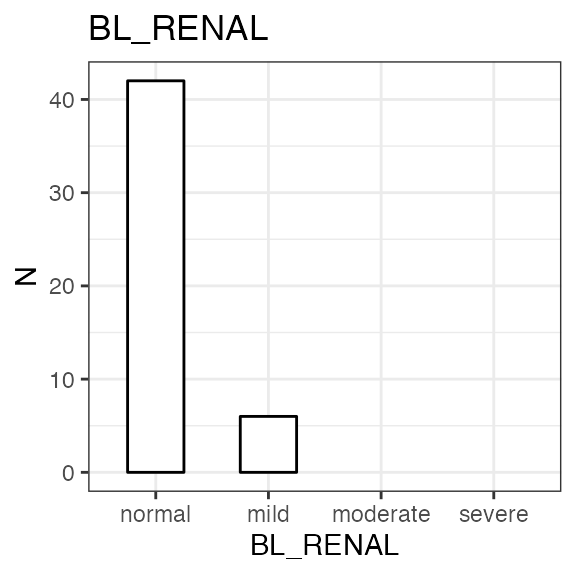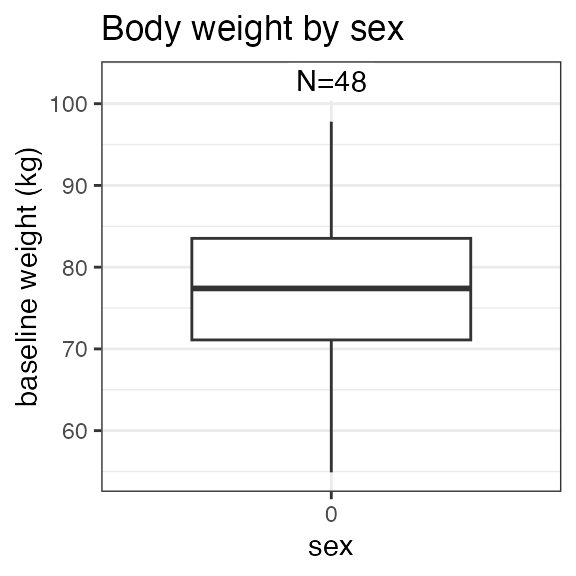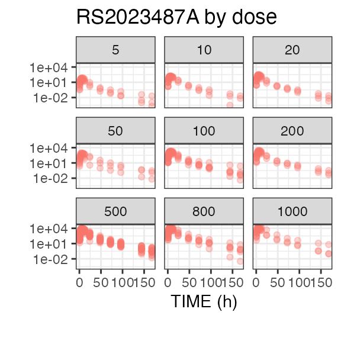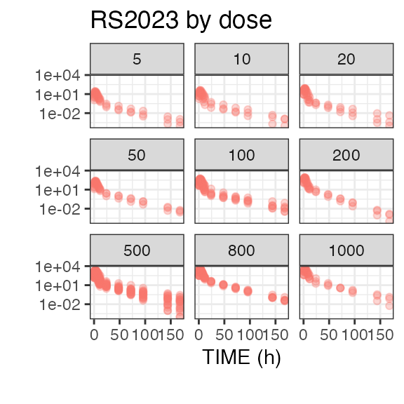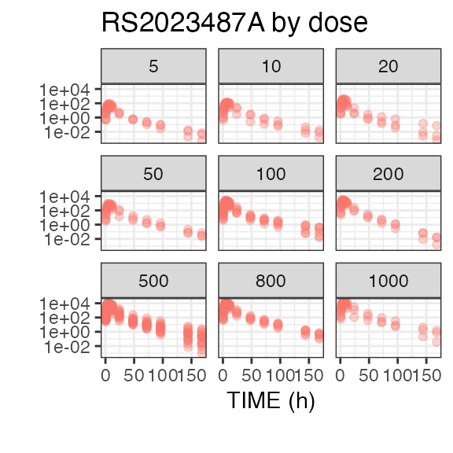
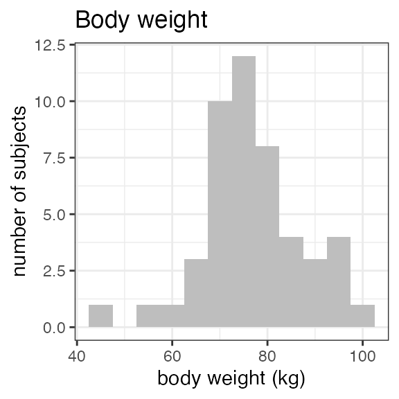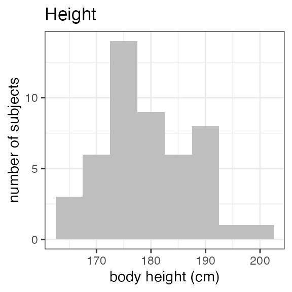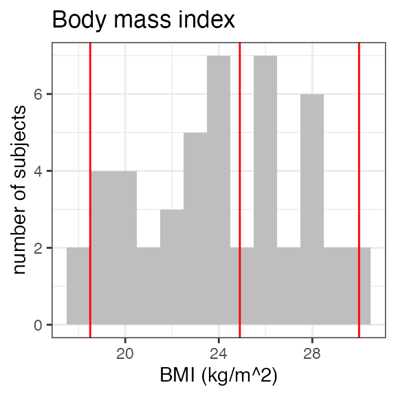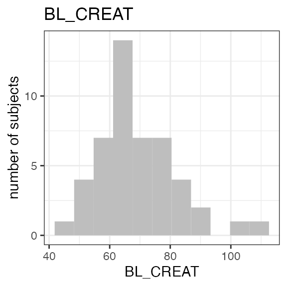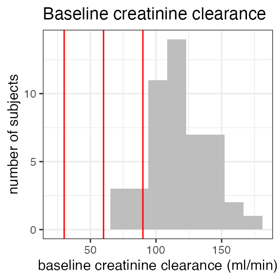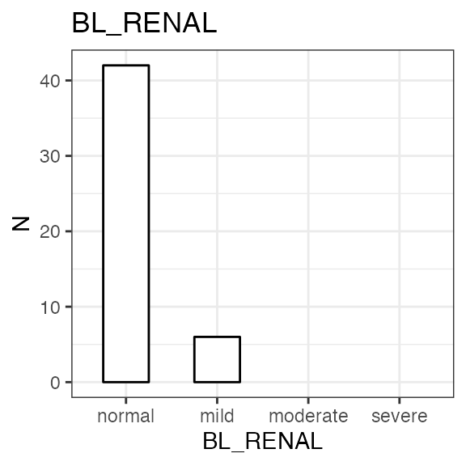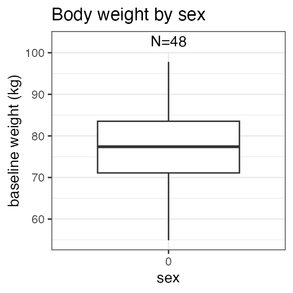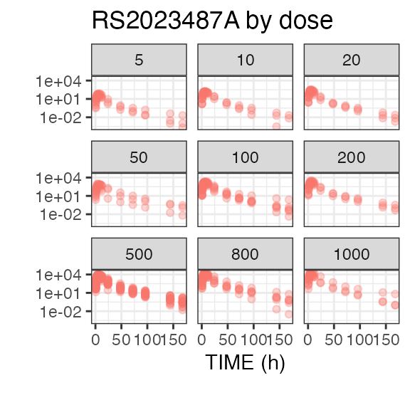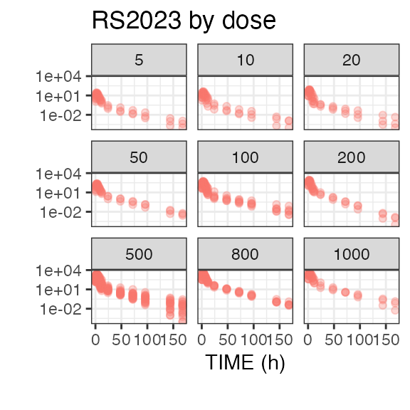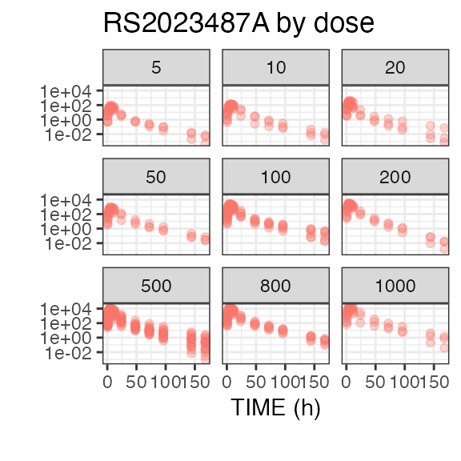
Specific analytes can be plotted using plot. After
non-compartmental analysis of PK data with rich sampling, both tabular
and graphical analyses are supported:
nif %>%
plot("RS2023", log = T, points = T, title = "Parent concentrations")
#> Warning: Removed 48 rows containing missing values or values outside the scale range
#> (`geom_line()`).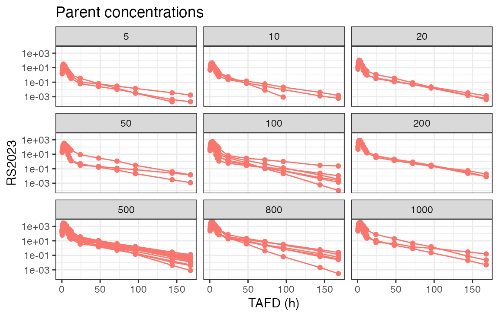
nca <- nif %>%
nca(analyte = "RS2023")
nca %>%
nca_summary_table() %>%
kable(caption = "RS2023 PK parameters")| DOSE | n | aucinf.obs | auclast | cmax | half.life | tmax |
|---|---|---|---|---|---|---|
| 5 | 3 | 91.59 (34) | 88.36 (33) | 21.43 (39) | 16.64 (37) | 3 (2; 3) |
| 10 | 3 | 195.06 (13) | 188.4 (13) | 42.82 (8) | 13.34 (50) | 3 (3; 3) |
| 20 | 3 | 332.57 (26) | 320.43 (25) | 79.86 (33) | 14.87 (17) | 3 (2; 3) |
| 50 | 3 | 921.48 (75) | 876.91 (69) | 210.99 (40) | 20.58 (35) | 2 (2; 3) |
| 100 | 6 | 1655.41 (46) | 1598.86 (44) | 383.22 (27) | 16.77 (45) | 3 (2; 4) |
| 200 | 3 | 3392.3 (11) | 3273.54 (11) | 704.94 (19) | 16.05 (18) | 3 (3; 3) |
| 500 | 18 | 9130.21 (27) | 8783.23 (26) | 1901.12 (29) | 16.05 (22) | 3 (2; 4) |
| 800 | 6 | 16107.61 (26) | 15433.28 (25) | 3189.76 (20) | 14.86 (26) | 3 (2; 4) |
| 1000 | 3 | 13530.61 (47) | 13068.09 (45) | 2846.67 (15) | 16.45 (48) | 3 (2; 4) |
invisible(capture.output(
nca %>%
nca_power_model()
))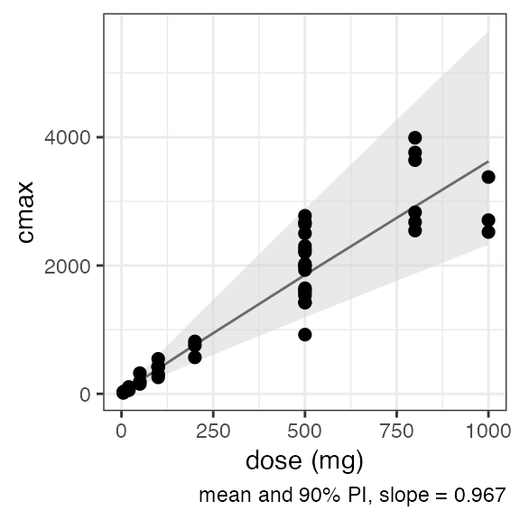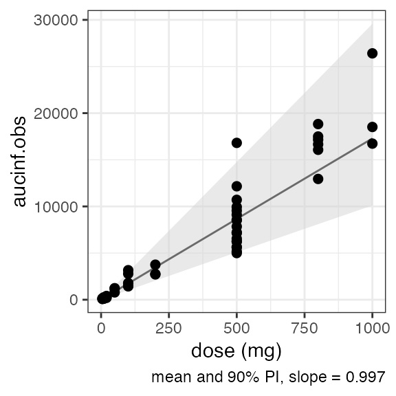
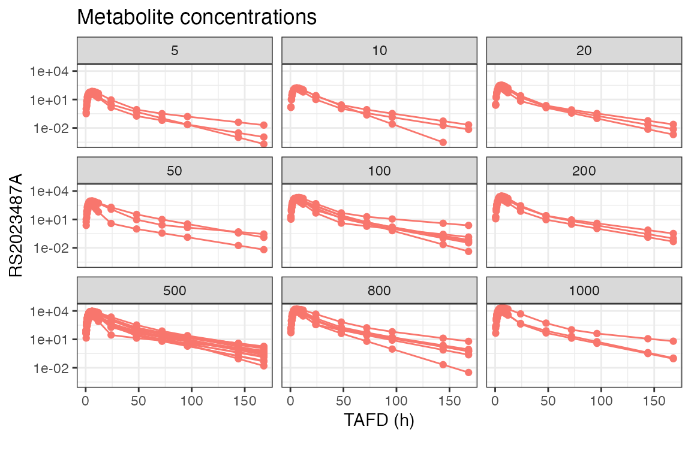